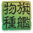
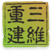

珍惜动植物

一级动物
二级动物
一级植物
二级植物

黔金丝猴
黔金丝猴，体重可达15公斤，两肩间有一白色块斑，鼻子仰天朝上，因此又称为白肩仰鼻猴。
黔金丝猴
黔金丝猴，体重可达15公斤，两肩间有一白色块斑，鼻子仰天朝上，因此又称为白肩仰鼻猴。
黔金丝猴
黔金丝猴，体重可达15公斤，两肩间有一白色块斑，鼻子仰天朝上，因此又称为白肩仰鼻猴。两肩间有一白色块斑
黔金丝猴
黔金丝猴，体重可达15公斤，两肩间有一白色块斑，鼻子仰天朝上，因此又称为白肩仰鼻猴。